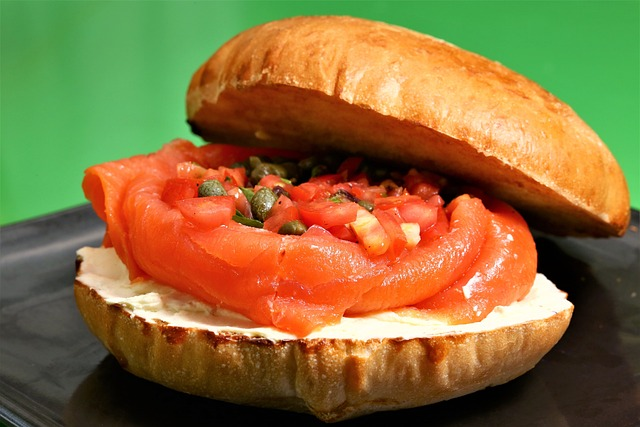

Broodje gerookte zalm met citroen geitenkaas, dille en kappertjes
10min | Lunch | 4 personen
- Ingredienten
- 4 harde bollen bv. Italiaanse bollen, halveren
- 200 gr zachte geitenkaas (Bettinehoeve of Chevre frais)
- 1,5dl crème fraîche
- 3 eetlepels crème fraîche
- Rasp en sap van ½ citroen
- Handje vol verse dille, gewassen en grof gehakt
- 300 gr gerookte zalm
- 1 el kappertjes, uitgelekt
- Peper
Bereidingswijze
Stap 1:
Roer de geitenkaas los met de crème fraîche en het citroensap.
Stap 2:
Besmeer beide kanten van het broodje met het geitenkaas mengsel. Verdeel de zalm over het broodje en bestrooi dit met dille en kappertjes. Maal er eventueel wat peper overheen.
Eet smakelijk!